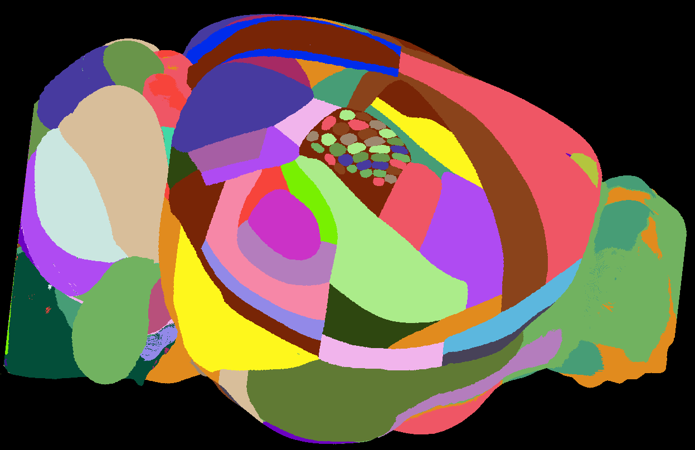

A mouse brain atlas with barrel field annotations has been added to BrainGlobe#
Bolaños-Puchet et al., 2024 recently published annotations of 33 barrels and barrel columns of the mouse isocortex in the Allen Mouse Brain Common Coordinate Framework. The Allen Mouse Brain Atlas (and particularly its Common Coordinate Framework) has been key to advances in computational neuroanatomy in the adult mouse. However, this atlas does not contain detailed annotations of the barrel cortex, which is the dominant topographically represented whisker-related area of the primary somatosensory cortex. The barrel cortex is a highly relevant system to study as mice are nocturnal, tunnel-dwelling animals that largely rely on their whiskers to survive. These annotations allow researchers to much more precisely localise features of interest within specific barrel columns vs. other barrels, within barrels vs. septa, for example, rather than the barrel field as a whole.
{kind=link}
Figure 1. Surface view of the barrel annotations.
EPFL PhD student Axel Bisi and the BrainGlobe team have now worked together to make the atlas available within the BrainGlobe ecosystem.
Two versions of the atlas are available, at 10μm (allen_mouse_bluebrain_barrels_10um) and 25μm resolution (allen_mouse_bluebrain_barrels_25um).
How do I use the new atlas?#
You can use the atlas like all other BrainGlobe atlases. To visualise the atlas in napari:
Install BrainGlobe (instructions)
Download the 25μm version of the atlas by running
brainglobe install -a allen_mouse_bluebrain_barrels_25umin the terminal (make sure to activate your conda environment first)Run
napari -w brainrender-napariand visualise the different parts of the atlas as described in our visualisation tutorial
Why are we adding new atlases?#
A key goal of BrainGlobe is to ensure that computational neuroanatomy software doesn’t need to be rewritten for new applications requiring novel atlases. We look forward to adding more atlases to BrainGlobe in the near future. If you’d like to get involved with a similar project, please get in touch.